zigbrew-scales: teaching the grinder to stop at 18.0 g
The grinder in part one ran on a timer. Now a 3D-printed dosing ring with a load cell inside weighs the portafilter as it fills, and presses the cradle switch itself, straight to the relay over Zigbee, when the dose lands on target. Design, bench, the press that arrived twice, the first morning, and a battery.
This is a follow-up to zigbrew, or how my Sage Barista Express joined the smart home. Everything here stands on that build: the two Sonoff dry-contact relays inside the machine, the one called zigbrew_grind wired across the grinder's cradle switch in inching mode, and the Home Assistant automations that press POWER when I get in the shower and GRIND when I come downstairs. If you haven't read it, the words relay, cradle switch and press below won't mean much. Go and read it; it's fifteen minutes. Nothing in this post opens the machine again.
Part one left the grinder on the machine's own timer. The GRIND AMOUNT dial sets a time, not a weight, and the weight drifts.
Fresh beans grind faster than stale ones. A finer setting is slower. A hopper that's nearly empty feeds the burrs differently from a full one. All of that changes how many grams land in the same number of seconds, so a dose that was 18 g on Monday is 17 g by Friday, and the shot pulls differently every day. The fix in every café is a scale under the portafilter, and a finger on the button. I wanted the scale without the finger.
The target: set a dose in grams, and have every morning's grind land within ±0.2 g of it, with no scale to watch and nobody in the kitchen. The machine already presses its own buttons from part one. What it needed was something that could feel the grounds arriving and press GRIND again at the right moment.
fn stop_at(target)
The Breville manual says it in the grinding section: push and release the portafilter to start a timed dose, push and release again to stop it early. The relay from part one already does the first push. So the whole project is: weigh the grounds as they land, and send one more press at the right moment.
Who sends that press matters. A Bluetooth coffee scale could reach Home Assistant through a proxy, and an automation could pulse the relay. But then every reading goes scale → proxy → Home Assistant → automation → Zigbee2MQTT → relay, and that path takes somewhere between a third and two thirds of a second, and varies. At 1.6 g/s, half a second of jitter is most of a gram. So the scale is home-made, it decides the stop itself at 84 readings a second, and it sends the press straight to the relay over a Zigbee binding. Home Assistant sets the target and writes the dose down. It is never in the loop.
The safety net is the machine's own timer. GRIND AMOUNT is turned up so the timed dose always runs a little past the heaviest target. If the scale, the network or the relay drops out, the grind still ends on the timer, a gram or two heavy. The worst case is a heavy dose, never a grinder that won't stop. That one decision shaped everything after: the scale never holds anything, it only ever presses.
enum where_the_scale_goes
The electronics were the easy half. The hard question was where a scale goes on a machine that holds the portafilter by its ears, on two hooks, under a grinder outlet with no headroom. Day one produced two directions. A was a portafilter-shaped cup scale that hangs in the cradle on its own, with a cup you tip into the real portafilter afterwards. It got as far as a fit test and an order of parts. Then I asked whether it would be crazy to weigh straight into the portafilter instead. It wasn't. That became B, and B is the one that got built.
I already use a dosing ring: a black plastic collar that clips onto the portafilter's ears and hangs on the cradle's hooks in its place, so the grounds fall through it into the basket. B is that ring, cut in two, with a load cell as the only thing joining the halves. The top half hangs on the hooks and is never weighed. The bottom half grips the portafilter exactly as the ring does today. Everything below the cut, portafilter and coffee, hangs from the cell.
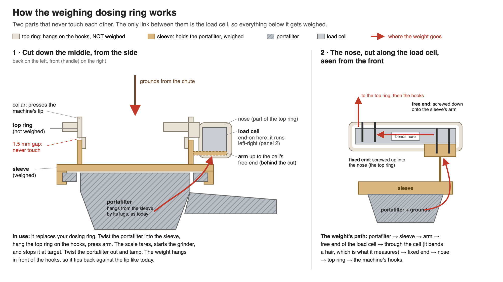
No cup to tip, no transfer step, nothing changes in the morning. The portafilter hangs where it hangs today. And balance comes free: the portafilter's weight reaches the top ring at the nose, in front of the hooks, so the ring tips back against the machine's lip the way the real dosing ring does with a handle on it. Direction A's cup scale had its weight behind the hooks and drooped.
A 1 kg load cell instead of 100 g, because it carries a 492.5 g portafilter before any coffee. Ten times the range is ten times fewer counts per gram, so the noise is ±0.13 g a reading instead of ±0.02. The firmware's trend line copes, as we'll see, but it's the reason the ring's own accuracy target is ±0.4 g and the cup scale's was ±0.2. And no wire: the ring goes in and out of the cradle with the portafilter every dose, so it had to run on a battery.
const parts
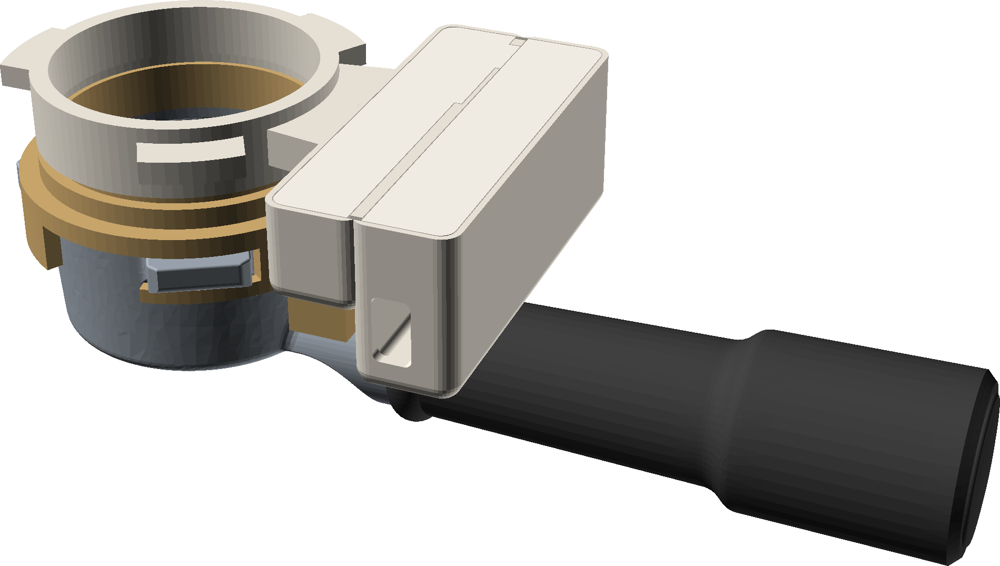
| Item | Notes | Paid |
|---|---|---|
| Seeed XIAO ESP32-C6 | Zigbee radio, deep sleep, LiPo charger on board. Thumbnail-sized. | £5.20 |
| Adafruit HX711 | 24-bit load-cell ADC. Set its RATE switch to H for 80 readings a second; the generic boards are stuck at 10, too slow to stop a grind on time. | £9.60 |
| 1 kg single-point bar load cell | 80 × 12.7 × 12.7 mm. M5 threads at the wire end, M4 at the other, which nobody tells you. Comes with a generic HX711 board you won't use. | £3 |
| LiPo 502030, 250 mAh | With a protection board. The plug comes off, one wire at a time, and the leads go to the XIAO's BAT pads. | £4.19 |
| 2 × M5 × 16, 2 × M4 × 16 socket caps | Fixed end up through the box floor, free end up through the sleeve's arm. Four screws hold the whole thing together. | pennies |
| About 85 g of PETG | Top ring, collar, sleeve, two lids, electronics carrier. PETG, not PLA: it sits next to a hot machine. | ~£1.70 |
| 30 AWG silicone wire | Load cell to HX711, HX711 to XIAO. | pennies |
About £24 in the ring. Not counted: the trial prints. Every printed part went through several versions, the carrier is on its seventeenth, which is several times that filament again.
The scale is 5 V USB and a small battery, and it never touches the machine's wiring: the relay and its mains tap are already in from part one. The one hazard is non-electrical. Anything that pulses the cradle blind can start an unwanted grind, because a press on an idle grinder starts it. The firmware only ever presses after it has been armed, and it counts its presses.
copy the_dosing_ring()
The sleeve has to grip the portafilter the way my dosing ring does, and the top has to hang on the hooks the way the ring does, so the first job was understanding the ring. Its skirt slips over the portafilter's rim, the three ears go up into J-shaped slots and twist, and a springy finger under each slot holds them. No click; the spring does it. Calipers on the underside: slot 6.0 mm tall, 21.58 long, finger 2.99 thick, entry gap 21.1.
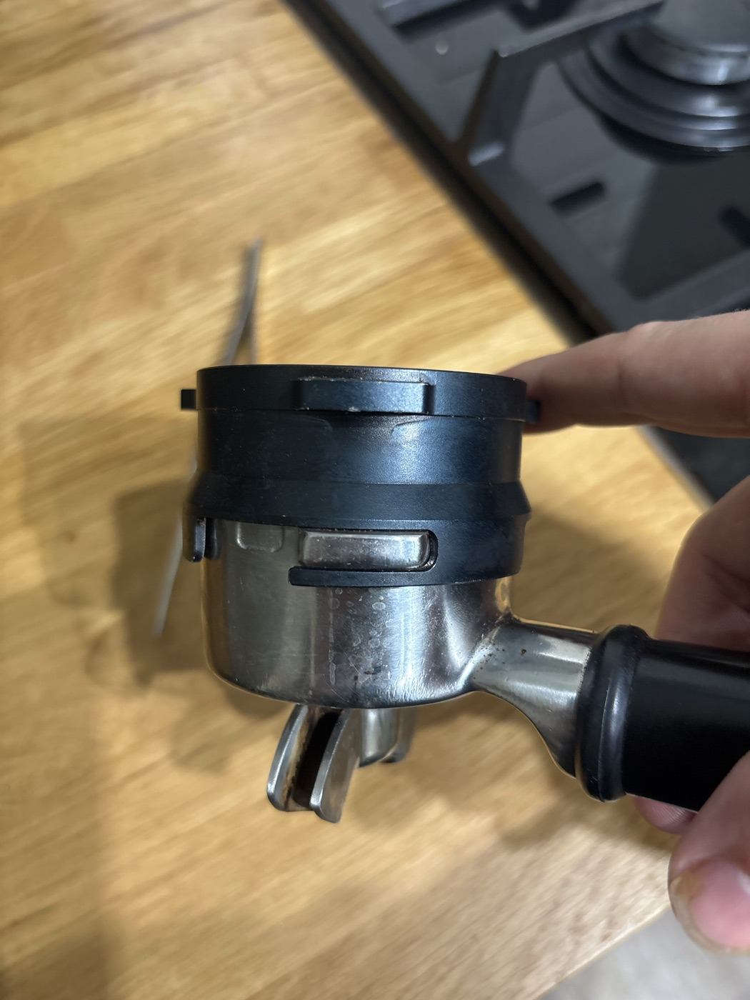
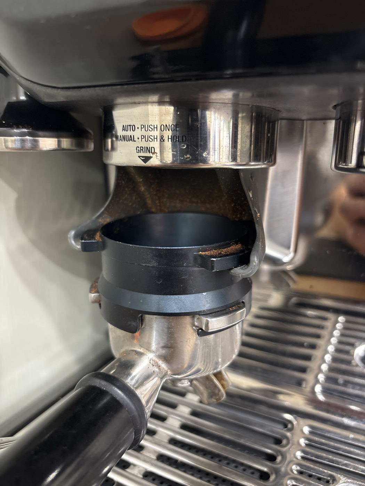
Three things went wrong between those measurements and a sleeve that fitted, and all three are worth knowing before you copy anything with calipers.
I'd used the three J-slot lengths as arc lengths at the wall's mid-radius. They're straight-line distances across the outside. The check that caught it: entry, slot and solid section have to add up to exactly 120°, three times round. They did, at an outside radius of 34.9 mm, which also gave the wall's thickness for free. The draft had the solid section 7° short.
I'd assumed clockwise. The first print sat on top of the ears instead of taking them in, and Marcus's note was exact: "the gaps aren't quite big enough and the solid section is slightly too long", which is what you get when each ear drops into its gap and then twists straight into wall. One sign flip in the CAD, and the load cell's arm mirrored sides with it, because the arm has to stay out of the ears' path.
The sleeve still didn't go on. The answer was a 1:1 model of the BES870 portafilter on GrabCAD. Measured from it: the rim sits 2.75 mm above the ears, and the ears flare at the root, from 33.6° wide outside to 37.8° at the skirt's inside face, so gaps copied from the ring were too narrow where it counted. The CAD now checks the sleeve against the real body: locked, through the twist, and pushed up into the gaps. The only contact allowed is the rim on its seat.
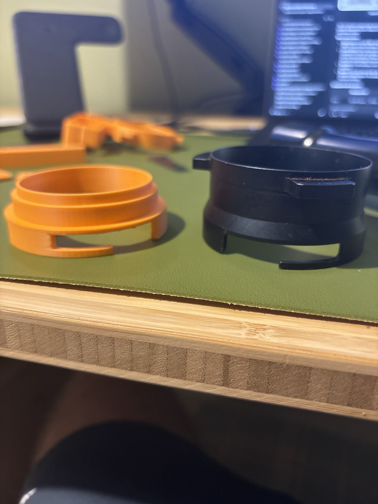
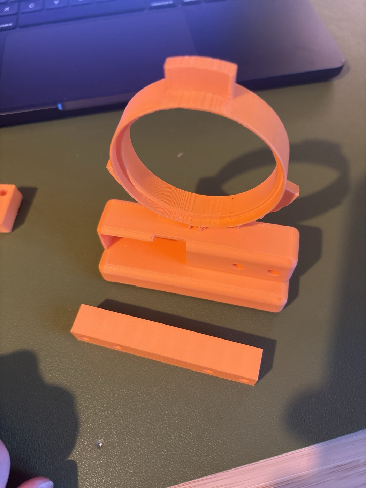
split it_in_two()
The design rule for the whole part is one sentence: nothing weighed may touch anything fixed. The two halves sit 2.5 mm apart everywhere, with a Z-shaped labyrinth in the wall so grounds can't climb out through the gap and nothing narrows the bore, which is tamper-sized all the way through so I can tamp through the ring like today. The load cell keeps a millimetre clear of its box all round. The white silicone potting over the strain gauges, which stands 1.3 mm proud of the bar, gets half a millimetre more on top of that, because anything resting on it carries part of the load and the reading lies.
The CAD refuses to render if any of that is violated. By the end there were 24 touch checks, each one an OpenSCAD intersection that has to come back empty, and a deliberate wrong placement that has to trip it, so the check is known to work. The ones I'm proudest of aren't about touching. They're about assembly: can the load cell get into the box, can the sleeve come up from below, can the lid go on. The first draft passed every clearance check and could not be put together.
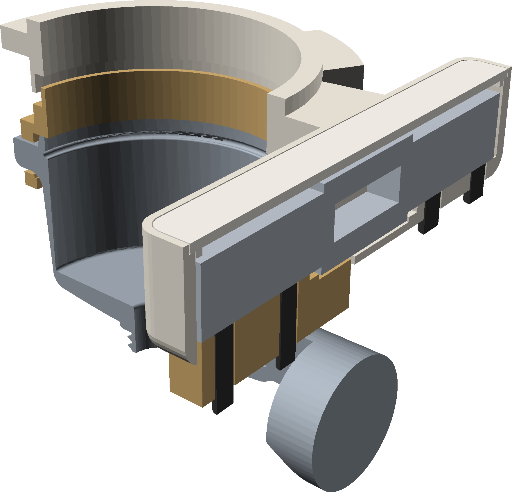
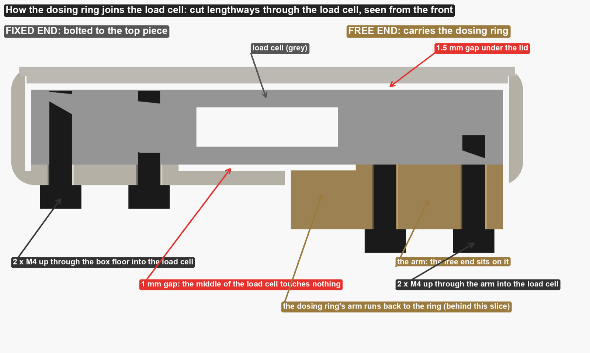
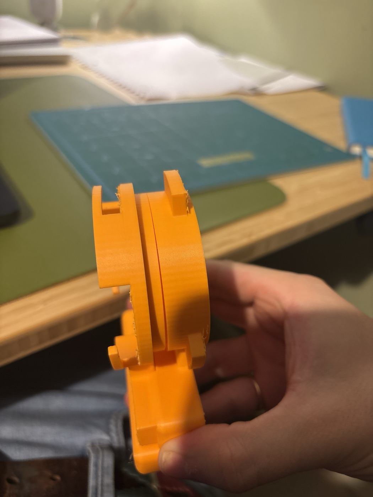
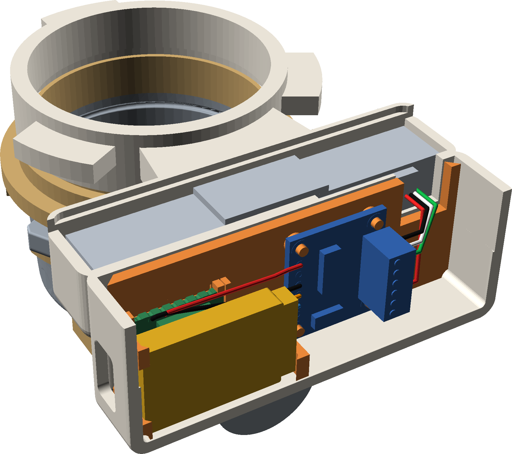
wire the_bench()
Four wires from the cell to the HX711's screw terminal, four from the HX711 to the XIAO: data, clock, 3.3 V and ground. The clock pin is D2 on purpose: it's a low-power pin the C6 can hold high through deep sleep, which powers the HX711 down on battery. A printed jig holds both boards at exactly their spacing on the carrier, so the wires come out the right length and the wired pair lifts straight across.
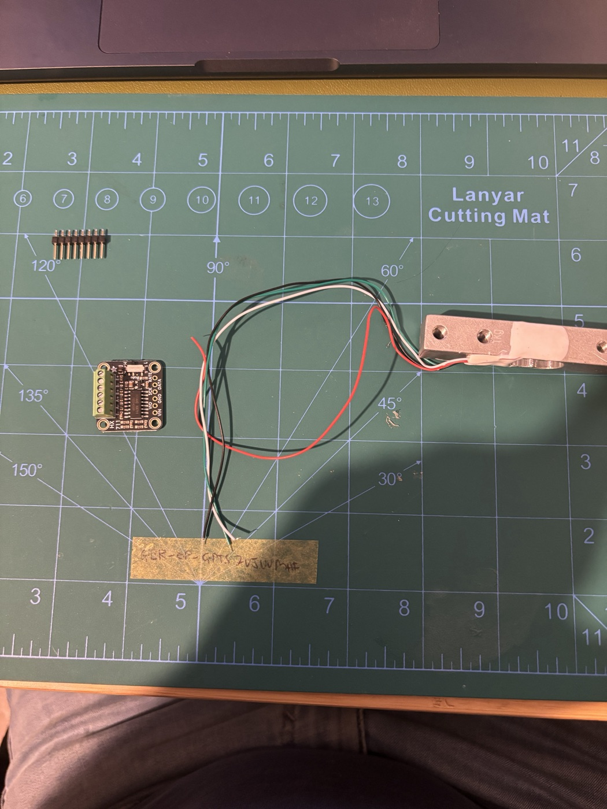
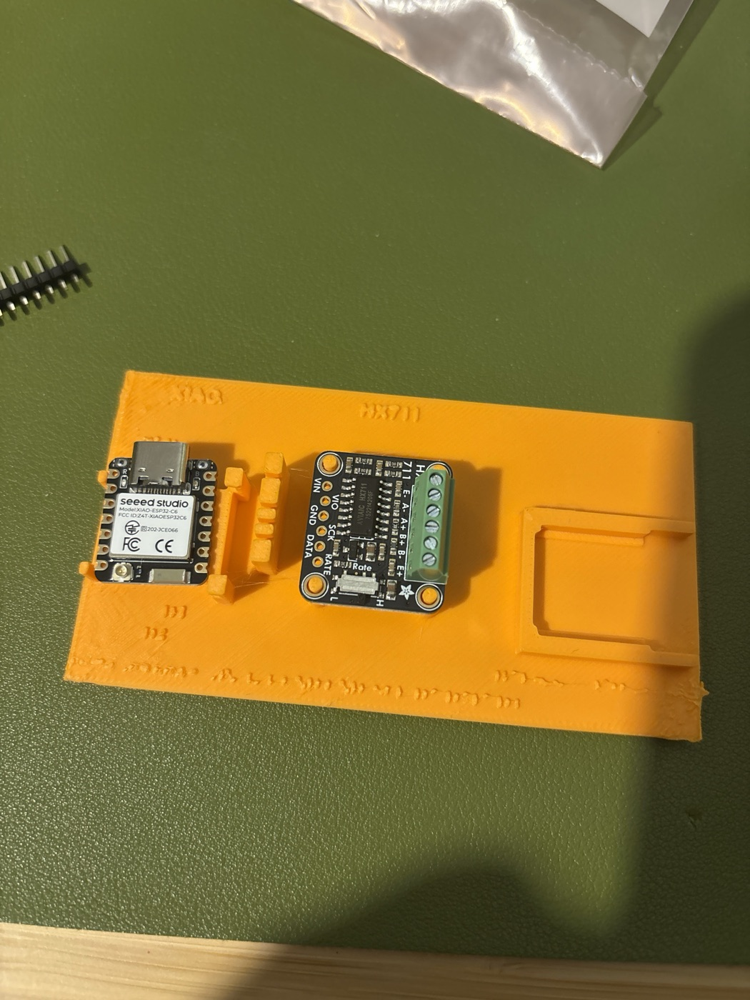
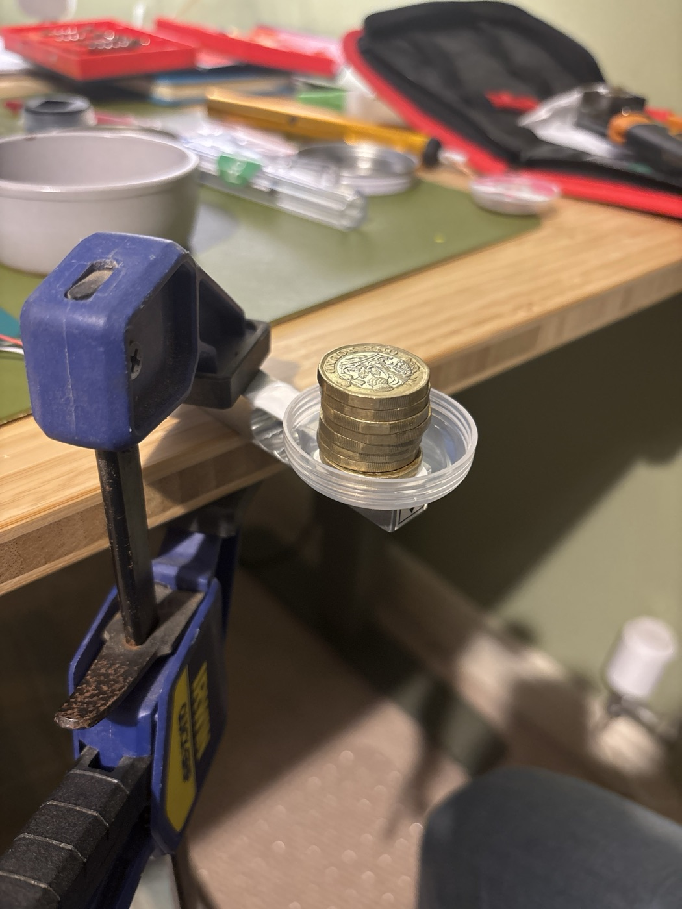
Wiring found one mistake before power-up: red on the HX711's VIO pad, one short of VIN, caught from a photo. First power-up showed 84 readings a second, so the RATE switch really was on H, and 1,074.8 counts per gram. Then a minute hands-off with the coins on, which is the picture below. Flat, no drift, and ±0.13 g of noise on every single reading.
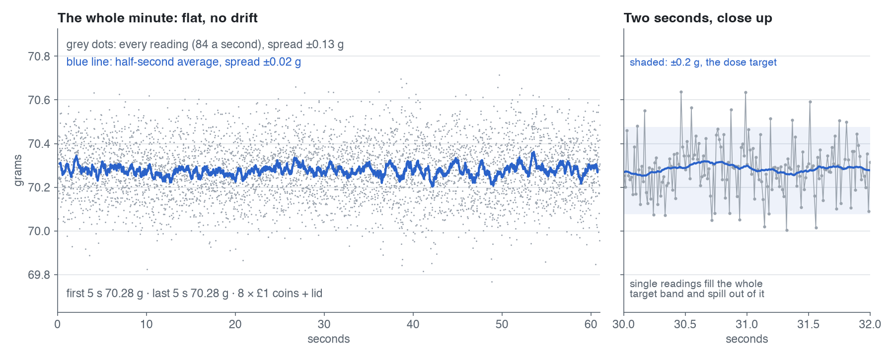
There's a sharp line in the noise at 34 Hz, which is mains hum folded down by the 84 Hz sampling. I checked whether a notch filter was worth building by running the recorded minute through the controller's own filtering first. The four-reading average it already uses knocks the hum to a quarter, and the 300 ms trend line that drives the stop came out at 0.051 g of noise with or without a notch. Not worth it. What's left is slow wander below 15 Hz, and no filter removes that without delaying the stop.
simulate before_you_grind()
The dose logic is a pure C++ header the firmware and a desktop simulator share. The simulator runs it against a model grinder with a start delay, a flow rate, stop latency with jitter, spin-down, grounds in the chute, motor vibration and a GRIND AMOUNT timer, then throws scenarios at it: a thousand doses, the timer ending the dose right at the stop point, 20% of commands lost, a slow link, the cup put on and taken off, a weight dropped on an idle scale. Every scenario runs at four noise levels, the last of which is a recorded minute of the real assembled ring, replayed from a random point, because real noise has spikes and wander that Gaussian noise doesn't.
It earned its keep before any hardware existed. The first controller had five real bugs, each found by a scenario. Noise could fake "grounds stopped". A stop press landing just after the timer had ended the dose started a second one, and nothing noticed. A lost stop slipped through because the rescue compared against a noise-inflated peak rate. The re-zero countdown never finished. And the Arduino Zigbee library silently refuses to send an On unless it made the binding, so the firmware builds the command itself.
It refuses if the scale isn't calibrated. The tare takes out overnight creep, which is 0.02 g in ten minutes on this cell. Nothing.
A press can't be taken back. If the machine was off, or the hopper empty, the grinder didn't start, and a second press would start it with nobody watching. So it doesn't.
No "is it still running?" check first. There used to be one, and on the ring's noise it came in just under its own bar about once in two hundred doses, held off, and the grinder ran on to the timer: 23 to 34 g in an 18 g basket. Marcus: "you're overcomplicating this." Press at the target.
That covers a lost command and a press that landed just after the timer and restarted it. Either way one more press is a stop, and the worst case is a gram or two.
lead ← lead + 0.3 × (final − target), but only from doses it stopped itself with no rescue presses. The final weight and the new lead go to Home Assistant.
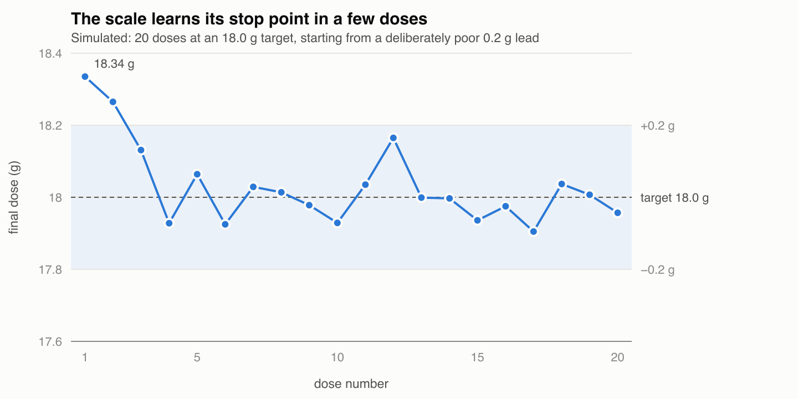
| 1,000 doses on the recorded noise | Result |
|---|---|
| Missed stops, runaways, extra presses, second doses | none |
| 95% of doses within | 0.23 g |
| Outside ±0.4 g | 3 of 980 |
| Timer ending right at the stop point, 400 runs | 75 restarts, all caught, worst +1.5 g |
| 20% of commands lost | no runaways, worst +6.9 g. If all four presses go, the timer ends it: 1 dose in 625 |
The lossy-link and slow-link rows are the argument for the direct binding. Stop-timing jitter goes straight into the dose.
grind for_real()
17 October. The ring assembled, hung in the real cradle with the portafilter clipped on, still on the laptop's USB. First the boring checks, which all passed: the sleeve hangs free (every poke comes back to the same reading), re-clipping the portafilter repeats to 0.2 g, the calibration from the bench holds (two £1 coins read 17.49 g of 17.50), and noise is the same ±0.13 g as the bare cell. The portafilter weighs 492.5 g. Then the trigger endpoint was bound to zigbrew_grind in Zigbee2MQTT, and Marcus said: "just run an actual grind and see what happens."
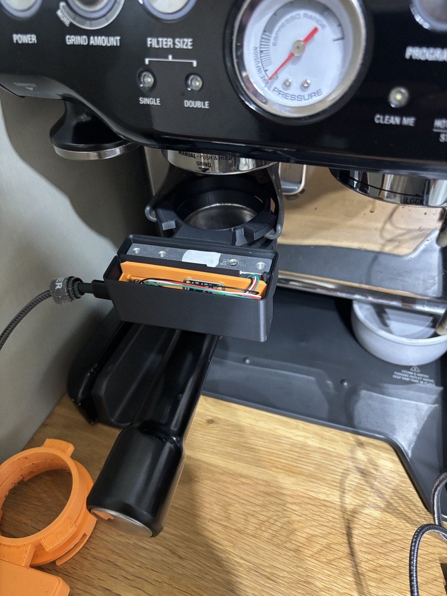
The first try pressed once, saw nothing for four seconds and gave up: the machine was off, and the relay can't start a grinder in standby. One press, no second, exactly as designed. Machine on, armed for 18.0 g with a guessed lead of 1.0 g:
| s from the start press | Weight | What happened |
|---|---|---|
| 0.0 | 0.0 | Start press. Relay ON in the Home Assistant logbook. |
| 0.9 | rising | First grounds. Start delay 0.9 s (the simulator had assumed 0.35). |
| 1 to 11 | 0.6 → 16.4 | Grinding at 1.6 g/s (assumed 1.3). |
| 11.4 | 16.9, trend 17.0 | Stop press. Relay ON. |
| 12 to 15 | 17.27, flat | It worked. About 0.35 g arrived after the press: latency, spin-down, chute. |
| 14.2 | Relay ON, 2.99 s after the stop, with no press from the scale. | |
| 15.2 | 17.3 → 18.9 | The grinder restarted, at grinding speed. |
| 15.9 | Rescue press: the scale saw grounds pouring at the dose's rate. Relay ON. Stopped again. | |
| 21.9 | 18.69 | DONE 18.69 g, "we stopped it, 1 rescue press". The lead didn't learn: rescued doses don't teach it. |
2.99 seconds is too round to be a coincidence. The ESP Zigbee stack in the Arduino core is built on ZBOSS, and I read the timer out of its library: an On command sent with an acknowledgement request waits 3.0 s for the ack, then sends the same frame again, up to three times. The relay had acted on the stop and its ack had gone missing in the air. The scale resent the stop. The relay, which should recognise a repeated frame by its counter, didn't, and on an inching relay every On it acts on is a press. Why its duplicate table missed it I still don't know; a sniffer would tell. It doesn't matter for the fix: a press that is never resent can't be duplicated.
The press now asks for no acknowledgement. The sketch builds the three-byte On frame itself and hands it to the stack with the ack flag off, so it goes out once and never again. Each radio hop still retries a few milliseconds apart at the MAC layer, and the receiver drops those copies by sequence number. A press that is still lost is simply missing, and the dose logic already handles missing: a lost start gets no grounds and gives up, a lost stop gets a rescue press 1.5 s later. The resend had also been working against the rescue, which nobody had spotted: lose the stop's first copy, the rescue stops the grinder at 1.5 s, then the 3 s resend arrives and starts it again.
The second grind, with the ring emptied, was clean: two presses, two pulses, and it repeated the first one almost exactly. First grounds at 0.89 s, 1.62 g/s, stop press at 16.99 g, settled at 17.34. So 0.35 g arrives after the stop press, not the 1.0 g I'd guessed for the lead. The scale learned 30% of the error on its own (1.00 → 0.80), and I set it to 0.35 from the console to save a few doses. Marcus called it there: "enough wasted coffee, for now."
automation morning_coffee
Part one's morning ends in one script that presses POWER, waits, and presses GRIND, each once a day. Only the GRIND press changed. If grind-by-weight is switched on and the scale has been heard from recently, the script arms the scale instead of pressing, waits for the scale's own start press to show up on the relay, and records the dose. If the scale is silent, it does the old timed press, so a dead scale still makes coffee. And if the scale was armed but no start press ever appears, the script notifies and stops. It never presses on the scale's behalf: fail to no coffee, never to a double press.
Started by hand that Sunday instead, through the same script, on a wall plug, with the 0.35 g lead:
# times rebuilt from the journal; the lines are the firmware's own
Home Assistant also keeps a Coffee scale dashboard: a live weight gauge, the target with − and + buttons that write to the scale over Zigbee, a "grind one dose now" button, the last dose with its error and press count, and thirty days of doses against the target. Every dose shows up there with how many presses it took. Two is normal. One is "no grounds". Three or more is a rescue, and the logbook says why.
sleep check_in_wake()
The bench build was a Zigbee router, always on, drawing 30 to 80 mA. On a 250 mAh cell that's an afternoon. So the ring on battery is an end device that deep-sleeps and checks in: every two minutes it wakes, rejoins the network from what it saved in flash, reports every reading and every setting, listens for a couple of seconds, and sleeps. Home Assistant can't write to a sleeping scale, so it keeps the wanted values and sends whatever differs while the scale is awake. If a grind is wanted, the check-in automation arms it. One dose per wake; a late or repeated arm is ignored.
I'd first designed a wake switch in a J-slot, so the ring woke when the portafilter clicked in. Marcus killed it in one line: "the portafilter sits in it overnight, and the grinder is triggered while I'm in the shower." There is nothing physical to wake on. Check-ins it is, and the cost is that the grind can start up to one interval after the trigger.
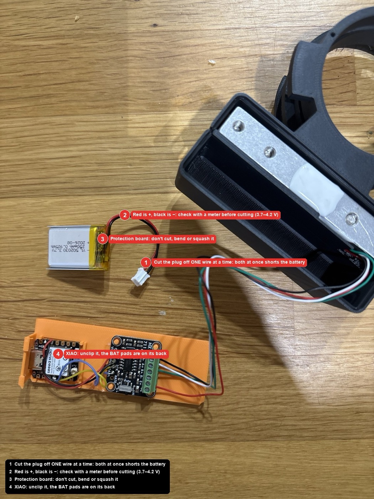
It worked first time next to the laptop upstairs, rejoining in 0.3 s. Downstairs in the cradle it went quiet. Two causes, found with the laptop on the kitchen counter:
- A loop in the Zigbee library. When a join times out, the Arduino core helpfully resets the saved channel list to all sixteen channels. The next 8 s join can't finish a full scan, times out, resets again, forever. One slow rejoin after the move was enough to start it. Fix: pin channel 24 before every join, and give a join after a failure 20 s instead of 8.
- A steady 5.5 s rejoin from the cradle, against 0.3 s upstairs. The stack picks the best-heard router whose beacon says it takes end devices, sends it a rejoin request, and waits five seconds for an answer before trying the next. Something near the machine was advertising room for children and never answering. I guessed the two relays inside the machine. I was wrong.
There's no sniffer here, so the firmware got one: a hook that sees every received radio frame before the stack does. While rejoining it records each router heard, its signal, whether its beacon takes end devices, and when it first sent us anything. If a rejoin took three seconds or more and the parent's first frame came four seconds or more after the scan, it hides the router the stack would have tried first, saves it in flash, and drops its frames from then on. The parent is never hidden, and after a failed check-in the next wake ignores the list.
First wake after flashing: "slow rejoin: scan at 296 ms, parent answered at 5451 ms; hiding 0x1ad5 (tried first, never answered)." 0x1ad5 is the office presence sensor, a Tuya TS0601. It's a router, its beacon offers to take end devices, it was heard best, and it never answers a rejoin. The relays inside the machine both offer too, but the scale barely hears them through the metal case, at −80 and −95 dBm, so they were never first. From the next wake: rejoin 0.5 s, awake 2.5 s, against 5.5 and 7.5 before.
Battery life is still an estimate, because the current hasn't been measured. At an assumed 80 mA awake, 2.5 s every two minutes is about 37 mAh a day, which is a week on this cell; every five minutes would be two. Battery level needs two resistors from BAT to a spare pin that aren't there yet, so for now it charges on a schedule, not on a number.
// what_id_tell_you
A straight reading across a curved part is a chord. Convert before you use it, and check the pieces add up to a full turn. That sum caught a 7° error.
The BES870 portafilter is on GrabCAD at 1:1. Design against it, and test the CAD against it. The rim sits 2.75 mm above the ears; I'd never have measured that.
Clearance checks prove the finished parts don't touch. They say nothing about whether the load cell can get into the box. Model the assembly steps too.
On an inching relay every On is a toggle. Send the press with no acknowledgement so the stack can never resend it, and let the dose logic handle a missing one instead.
Set the dial above your heaviest target and leave it there. Then every failure, lost command, dead battery, wrong guess, ends in a slightly heavy dose instead of a running grinder.
The relay can't start a grinder in standby, as in part one. The scale presses once, sees nothing for 4 s, and gives up. It must never press again on its own.
A power bank or a laptop on battery gave 0.19 g of noise against 0.13 earthed. The mains hum in there isn't worth a filter: the averaging you already do removes it.
A Tuya mmWave sensor advertises room for end devices and never answers a rejoin. Any sleepy device near it pays five seconds a wake. Log what the rejoin hears, and hide the liar.
export one_page_overview
The whole project on one page, numbers as measured on 18 October. Everything behind it, the OpenSCAD with its touch checks, the firmware and the simulator, the Zigbee2MQTT converter, the Home Assistant scripts and the dashboard, and a build journal with every wrong turn, is in the zigbrew-scales repo.
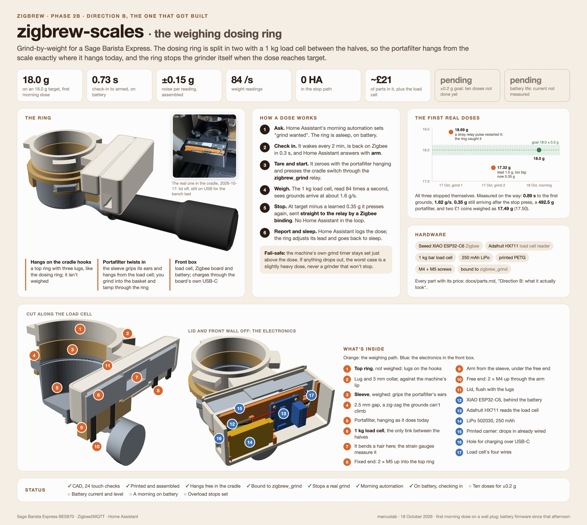
Ten doses in a row, so the ±0.2 g claim is a measurement rather than a simulation. The battery current with a meter, and a divider so the ring can report its own level. The overload stops, which are designed in and not yet set. A whole morning on battery, start to finish. Then, maybe, faster check-ins while I'm awake and before the grind, so the dose starts seconds after I reach the kitchen instead of up to two minutes later.
Thanks to Breville for writing "push and release again to stop" in the manual, which is the sentence the whole project rests on, and to espressoshock for the BES870 portafilter model on GrabCAD. And to part one, without which there'd be nothing for the scale to press.